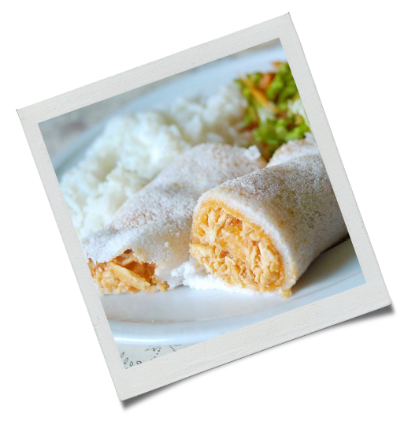

1 peito de frango
 cozido e desfiado
cozido e desfiado3 colheres (sopa) de farinha de trigo
3 tomates médios picados sem sementes
1 xícara (chá) de leite desnatado quente
1 colher (sopa) de sal light magro
1/2 cebola média picada
1/2 colher (sopa) de margarina culinária
Coloque em um recipiente a goma de tapioca com o sal e misture;
Aqueça uma frigideira antiaderente pequena e coloque 3 colheres (sopa) cheia de mistura até cobrir o fundo da frigideira;
Deixe assar por aproximadamente de 2 a 4 minutos em ambos os lados como se fosse uma panqueca, repita esse procedimento até acabar a mistura.
Leve ao fogo uma panela com a margarina e a cebola até dourar;
Acrescente o tomate, colorau, sal e deixe cozinhar até murchar o tomate;
Adicione a farinha, misture bem e acrescente o leite mexendo até obter um creme. Coloque o frango, misture bem e reserve.